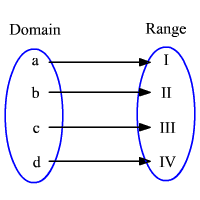
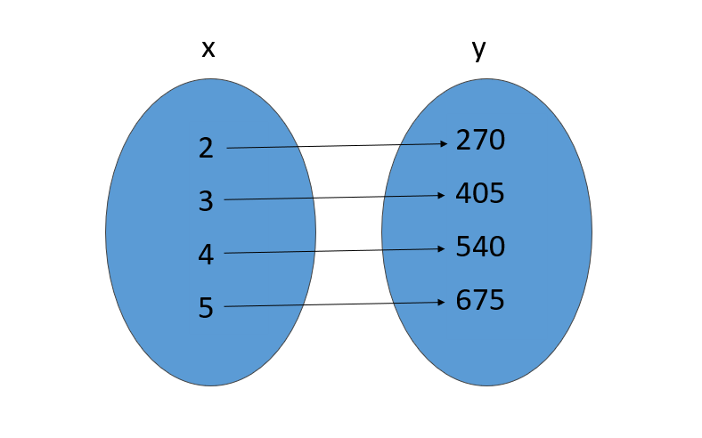
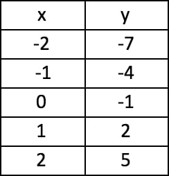
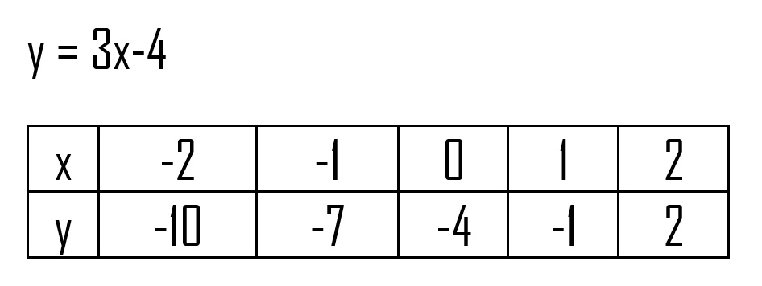
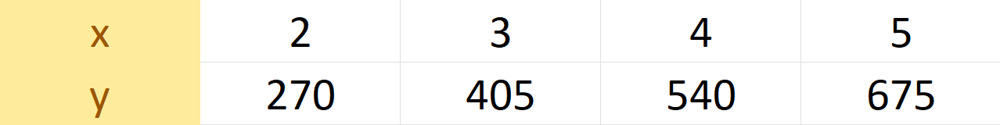

Welcome to Relation And Function
Relation - is any set of ordered pairs. The set of all x-values is called the domain of the relation. The set of all y-values is called the range of the relation.
FOR EXAMPLE:
Winter drives her bike in a daily basis, her bike can drive on a speed of 135 km/h at top speed.
QUESTION:
1.)How many kilometers would Winter reach if she drives her bike 2 hours a day? How
about 3 hours? 4 hours? or 5 hours?
To solve this, let us express each given into an ordered pair and determine its Domain and Range
Explanation: The distance that Winter would reach depends on how much time she would travel. 2 hrs = 270 km, 3 hrs = 405 km, 4 hrs = 540 km, and 5 hrs = 675 km.
in ordered pair: (2,270),(3,405),(4,540),(5,675)
Now that we got our ordered pair, we can now identify its Domain and Range
Domain: {2,3,4,5} Range: {270,405,540,675}
Alright! We solved its Domain and range, now, let's present this example using two other ways: Mapping and Table of Values.
MAPPING
Mapping uses an oval shape connected by a line, the first oval contains the x (Domain) while the second oval contains the y (Range). A Mapping Diagram looks like this:

Now, let us use our previous example in this diagram.
Since our Domain is {2,3,4,5} and the Range is {270,405,540,675}, the domain would be placed inside the first oval while the range would be placed on the second.

The mapping should look like this.
TABLE OF VALUES
The table describes clearly the behavior of the value of y as the value of x changes. Tables can be generated based on the graph. Below is an example of a table of values, they can be either vertical or horizontal.
Vertical

Horizontal

Now, let's use our example in Table of Values.

The domain of a relation is the set of all x-values while the range is the set of all y-values.
END - Hope you learned something from this page.
Home